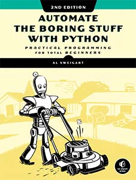

Courses at Mt. San Antonio College
Summer 2025
Summer courses are 6 weeks long and are offered ONLINE and ASYNCHRONOUS. Course material will be delivered throught the Canvas LMS.
CISB 11 – Computer Information Systems
Overview of computer information systems including computer hardware, software, networking, programming, databases, Internet, security, systems analysis, ethics, and problem solving using business applications. CISB course information.
📚 New Perspectives on Computer Concepts 2018: Comprehensive
📚 Discovering Computers: Digital Technology, Data, and Devices
This course is offered asynchronously online.
CISP 10 – Introduction to Object Oriented Programming
Object-oriented design, patterns, and use of Unified Modeling Language (UML) in different programming languages that will enable students to build large packages and business applications. The course also covers Agile and Scrum methodologies. Learn more about our CISP courses.
📚 Programming Logic and Design, 10th Edition.
📌 This coures will focus on the Python 3 programming language.
This course is offered asynchronously online.
Fall 2025
CISB 11 – Computer Information Systems
Overview of computer information systems including computer hardware, software, networking, programming, databases, Internet, security, systems analysis, ethics, and problem solving using business applications. CISB course information.
📚 New Perspectives on Computer Concepts 2018: Comprehensive
📚 Discovering Computers: Digital Technology, Data, and Devices
CISB 11 will be offered both in person and asyncronously online.
CISN 71 – Introduction to Cloud Computing
Concepts and principles of cloud computing that shift information systems from on-premises computing infrastructure to highly scalable internet architectures. Topics includes cloud computing technologies, cloud services (storage, servers and software applications), cloud providers, industry cloud practices, cloud careers, and industry demand for cloud skills. Students analyze a variety of case studies to effectively evaluate and assess the business and technical benefits of cloud computing and cloud applications.
This course is offered asynchronously online.
CISN 71 is part of AWS Academy and helps you earn the AWS Certified Cloud Practitioner certification.
CISW 17 – HTML, CSS, and JavaScript Programming
Plan, program, implement, publish, and maintain web sites using Hypertext Markup Language version 5 (HTML5), Cascading Style Sheets version 3 (CSS3), and JavaScript. Includes working with text, semantic, and multimedia objects, tables, forms, Application Programming Interfaces (APIs), Document Object Model (DOM), cross-browser compatibility, markup validation, client-side interactivity, and principles of web page design, web site construction, documentation, and publishing.
In person on Wednesdays from 7pm—10:10pm

CISW 24/24L – Secure Web Server Programming in Python
Secure web programming to create user interfaces, extract information and manage databases, manage files, format reports, and access web servers using Python programming language.
Offered asynchronously online.
There is both a lecture and lab component for this course.

Learn more about the degrees and certificates you can earn at Mt. SAC.